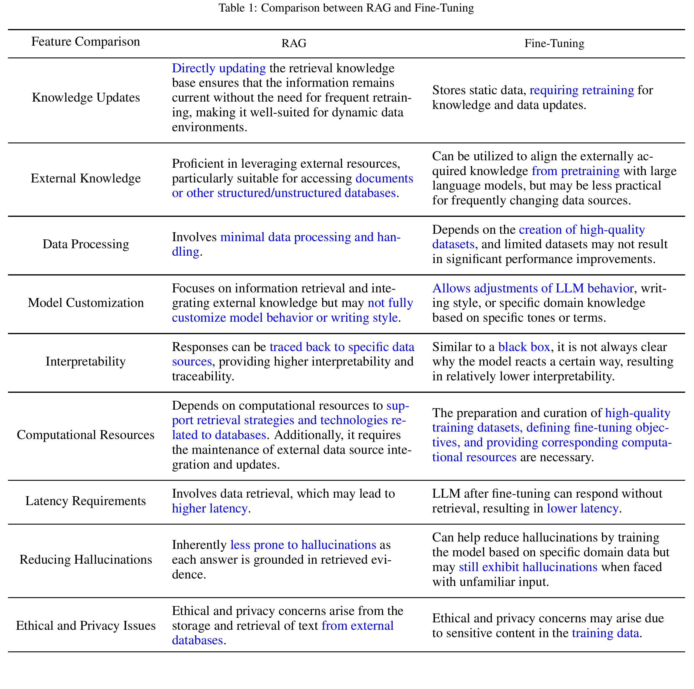

为什么需要RAG？
传统的LLM模型主要存在以下2个问题：幻觉以及外部知识/最新知识的缺失，RAG可以通过结合基于检索和生成模型的优势来提供更准确和上下文相关的响应，可以添加自己的预料构建知识库。
RAG vs. fine-tuning a LLM model
下图源自RAG-Survey

结合个人理解：
1.
RAG更适合知识库需要动态更新的情景，这部分数据不作为用于LLM的训练数据，而是通过LLM的能力进行检索。
2. RAG由于采用检索的形式，数据来源是可知的，而LLM是黑箱。
3. RAG 可以对生成过程提供更多控制。
Query Classification 查询分类
并非所有查询都需要用到检索增强，需要将查询分类为需要使用RAG和直接用LLM生成两类。
持续更新中...